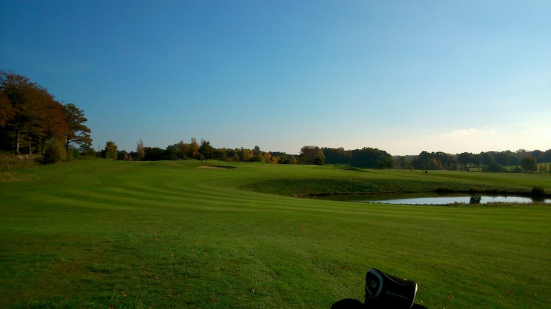

<div class="pages">
  <div data-page="hul6" class="page navbar-fixed toolbar-fixed" >
    <div class="navbar">
      <div class="navbar-inner">
        <div class="left">
          <a href="#" class="link back icon-only"><i class="icon icon-back"></i></a>
          <!-- <a href="#" class="back link icon-only"><i class="icon icon-back"></i></a> -->
        </div>
        <div class="center">Hul 6</div>
        <!-- <div class="right"></div> -->
        <div class="right">
        </div>
      </div>
    </div>
    <div class="page-content" style="padding-top:45px;">
       <div class="content-block">
          <center></center>
          <p>Et virkeligt udfordrende par 3 hul, ikke mindst i stærk vind. Greenen er placeret på toppen af et skrånende terræn.</p>
          <center></center>
          <p>Udslaget skal helst lande lige før, eller på green. For den mindre øvede spiller som ikke vil bringe søen i spil, kan ruten lægges venstre om søen. For alle er out of bounds i hullets venstre side samt bunkererne på begge sider af green i spil.</p>
          <p>For lav-handicapperen er det vigtigt at bedømme vinden rigtigt, retning og styrke. Husk også at tee ligger en smulere lavere end green.</p>
          <p>Hulsponsor: <br />
          -LEDIGT-<br /><br />
          Bænksponsor:<br />
          
          </p>
        </div>
    </div>
    </div>
    </div>
  </div>
</div>
